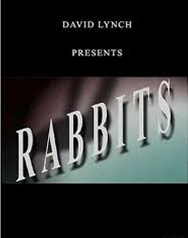

What I'm really watching: David Lynch's YouTube channel
LA weather reports, office DIY projects, nature notes … they’re all there in the film director’s daily video blogs about California life, a sunny blessing in lockdown
Our morning routines have changed. More energetic types may have been bouncing out of bed for a virtual PE lesson, and domestic deities are shuffling into the kitchen to inspect their sourdough starters. Me, I’ve been waking up each morning to check yesterday’s weather in Los Angeles.
In mid-May David Lynch activated a YouTube channel (David Lynch Theater) for the express purpose, it seems, of keeping Angelenos up to date with the local weather forecast. It’s the revival of an old habit: he used his website for the same purpose back in the early 2000s. In clips just a few seconds long, the director, artist, musician and now YouTuber can be seen seated at his desk, with curls of steam rising from his coffee cup, delivering a weather forecast (in fahrenheit and celsius), pausing only to turn his head and gaze out of the window, as he assesses the stage of the morning cloud formation. True to form, his forecasts are generally optimistic. The clouds will burn away, the mercury will rise and there will be “sunshine all the way”. He concludes with a salute, and the instruction to “have a great day”.
“
Rabbits, starring Scott Coffey, Naomi Watts and Laura Elena Harring In a nameless city deluged by a continuous rain … three rabbits live with a fearful mystery. Story of a Small Bug
“
On 2 June, designated #blackouttuesday by the music industry, Lynch was absent from the frame, leaving us with 28 seconds of silence and an empty chair. Even the coffee appeared to be cold. In case his point had been missed, the following day, he gave the forecast in front of a handmade sign painted with the words: “BLACK LIVES MATTER/PEACE JUSTICE/NO FEAR”. Did 74-year-old Lynch join the BLM demonstrations in Los Angeles? Maybe so.


Lynch has more than meteorology on his mind. He has uploaded two short films to the channel, exploiting the element of surprise as he did when he released 2017’s What Did Jack Do? on Netflix in January. First he sprang the abstract animation Fire (Pozar) on us and more recently, episodes of his 2002 leporine hellmouth “sitcom” Rabbits, starring Scott Coffey, Naomi Watts and Laura Elena Harring: “In a nameless city deluged by a continuous rain … three rabbits live with a fearful mystery.” He has even debuted a David Lynch Theater original: The Story of a Small Bug, in which Lynch’s narration and fearful sound design elevate the encounter between a hungry lizard and an unsuspecting creepy-crawly to an Attenborough-esque horror.